Der Große Saal (Rittersaal)
How to use your own text for processing
- Add a new Text item to the wikibase. link to wikibase new item the item should contain the following statements:
- P57 (external link): link to the html file containing the new text
- P46 (kurator): Item of the curator. you may use an existing item like Q210 (Ulrike seeger) for test purposes
- P53 (license): Item of a license for the text. e.g Q203 (CC BY-NC-ND 4.0 DEED )
- P6 (is part of): set value to Q218 (Schlossanlage Weikersheim)
check if your new text item occurs in the list of selected text items: Link to wikibase query service
set parameter of get_text() to the id of your new text item e.g.: get_text(“Q209”)
Wikibase link: https://computational-publishing-service.wikibase.cloud/entity/Q235
Kurator: Seeger, Ulrike
Die barocken Ahnenportr4ts
Entstehungs-und Erhaltungsgeschichte
Im Barock wurde der Weikersheimer Gro9fe Saal zum Rittersaal umgedeutet. Hierzu lie9f Carl Ludwig fdie
Fensterpfeiler zun4chst 11 ganzfigurige Portr4ts seiner m4nnlichen Vorfahren in Ritterrmalen.[1] Verdingt
wurden die Bilder 1710 an Peter Franz Tassaert aus Rothenburg, der hierfPortr4ts in 96hringen kopierte.[2]
Tassaert wurde seinerzeit 11 Gem4lden beauftragt.[3] Erst sp4ter kam als Nachzals zw6lftes Portr4t das von
Carl Ludwig hinzu. Es zeigt ihn mit seinen Orden, die er laut Inschrift in den Jahren 1726 (w
Jagdorden), 1738 (d4nischer Elefantenorden) und 1739 (d4nischer Fidelitas-Orden) erhalten hat. Ein Datum post
quem fdie Entstehung des Portr4ts stellt die Aufnahme in den Elefantenorden dar, da der Graf diesen
h6chstrangigen seiner Orden auf dem Portr4t deutlich sichtbar mit Elefanten-Kleinod, blauer Sch4rpe und
Bruststern am Leib tr4gt. Der Maler Peter Franz Tassaert starb 1735, sodass dieses zw6lfte Bild nicht von ihm
sein kann.
Beschreibung und Ikonographie
Dadurch, dass die Portr4ts an den Trumeaus nicht wandfest montiert, sondern mobil als Tafelbilder h4ngen, lassen
sie keine Rauf die ursprAnordnung zu. Die von Graf Carl Ludwig getroffene Auswahl der 12
Portr4ts in Ritterrsetzt sich wie folgt zusammen.
Dargestellt ist zun4chst die direkte genealogische Verbindung zwischen Graf Wolfgang, der das Weikersheimer
Renaissanceschloss gebaut hat, und dem damaligen Auftraggeber Carl Ludwig. Graf Wolfgang war Carl Ludwigs
Urgro9fvater, sodass zwischen diesen beiden Regenten der Vater von Carl Ludwig, Johann Friedrich I. von
Hohenlohe-Neuenstein (1617) und der Gro9fvater von Carl Ludwig, Kraft von Hohenlohe-Neuenstein-96hringen
(1582) standen. Letzterer war ein Sohn Graf Wolfgangs. Sie werden im folgenden als Portr4t 1 beschrieben.
Da im Haus Hohenlohe nicht zwangsl4ufig an den 4ltesten Sohn vererbt wurde, sondern die Herrschaft unter den
S6hnen geteilt und die Zuweisung der einzelnen Herrschaften das Los entschieden wurde, hat Carl Ludwig
zus4tzlich zu seinem Vater, seinem Gro9fvater und sich selbst auch die jeweiligen Brmit in das Programm
aufgenommen. Damit kam er auf 12 Portr4ts. Die Portr4ts der Brwerden als Portr4t 5 in chronologischer
Reihenfolge besprochen.
Es handelt sich durchgehend um ganzfigurige Portr4ts, bei denen der Dargestellte meist vor einem Vorhang mit
etwas Landschaftsausblick steht. Bis auf eine Ausnahme blicken alle Ahnen nach rechts. Der danebenstehende Tisch
mit abgelegtem Helm befindet sich dabei entweder rechts oder links des Dargestellten. Bei einigen Bildern
standen Tassaert ganzfigurige Vorlagen zur Verf, was die individuelle historische Kleidung vermuten l4sst.
Bei anderen scheint er auf Brustbilder angewiesen gewesen zu sein, die er zu erg4nzen hatte. Einige Portr4ts
tragen ausfInschriften mit Lebensdaten und Angaben zur genealogischen Verortung des Dargestellten.
[1] Die Namen der dargestellten Ritter bei Merten, Weikersheim, o. J., S. 46.
[2] Hierzu hat sich eine Quelle erhalten (HZAN We 115 B, Nr. 1001), die Valentin, Malerische Lebensl4ufe,
2019, Anm. 11 anf. Au9ferdem zu dem Vorgang: Schnurrer, Tassaert, 2014, S. 43 und 54, der allerdings alle 12
Gem4lde Tassaert zuschreibt.
[3] Valentin, Malerische Lebensl4ufe, 2019, Anm. 11.
How to select images for processing
Images are selected via the sparql query. The method get_img() is capable of using a wikibase item id as parameter to select images with the property P6 (is part of) linking to the given item id.
select a valid location id from the query result: Link to wikibase query service
set parameter of get_img() to the id of your selected location item e.g.: get_img(“Q217”)
Wikibase link: https://computational-publishing-service.wikibase.cloud/entity/Q212
Title: Rittersaal & Raum 72 – nach Westen
Year: 2018
Description: Teil von: Schloss Weikersheim SaalbauWolfgang Beringer, Baumeister & Steinmetz - Georg Stegle, Baumeister - Entwurf: Georges Robin, Architekt - Elias Gunzenhäuser, Zimmermann - Weikersheim, Marktplatz 11 - ab 1595
Wikibase link: https://computational-publishing-service.wikibase.cloud/entity/Q213
Title: Löwenpaar – Gesamtansicht
Year: 2018
Description: Gerhardt Schmidt, Bildhauer - Mitarbeit: Christoph Limmerich, Bildhauer - Mitarbeit: Caspar Dieterich, Fassmaler - Weikersheim, Schloss Weikersheim, Rittersaal & Raum 72 - Vollendung: 1605 - 1747
Wikibase link: https://computational-publishing-service.wikibase.cloud/entity/Q214
Title: Bär – Gesamtansicht
Year: 2018
Description: Gerhardt Schmidt, Bildhauer - Mitarbeit: Christoph Limmerich, Bildhauer - Mitarbeit: Caspar Dieterich, Fassmaler - Weikersheim, Schloss Weikersheim, Rittersaal & Raum 72 - Vollendung: 1605 - 1747
Wikibase link: https://computational-publishing-service.wikibase.cloud/entity/Q215
Title: Hirschpaare – Gesamtansicht
Year: 2018
Description: Gerhardt Schmidt, Bildhauer - Mitarbeit: Christoph Limmerich, Bildhauer - Mitarbeit: Caspar Dieterich, Fassmaler - Weikersheim, Schloss Weikersheim, Rittersaal & Raum 72 - Vollendung: 1605 - 1747
Wikibase link: https://computational-publishing-service.wikibase.cloud/entity/Q216
Title: Affe – Gesamtansicht
Year: 2018
Description: Gerhardt Schmidt, Bildhauer - Mitarbeit: Christoph Limmerich, Bildhauer - Mitarbeit: Caspar Dieterich, Fassmaler - Weikersheim, Schloss Weikersheim, Rittersaal & Raum 72 - Vollendung: 1605 - 1747
Wikibase link: https://computational-publishing-service.wikibase.cloud/entity/Q200
Title: Rittersaal & Raum 72 – nach Osten
Year: 2018-01-01T00:00:00Z
Description: Teil von: Schloss Weikersheim Saalbau Wolfgang Beringer, Baumeister & Steinmetz - Georg Stegle, Baumeister - Entwurf: Georges Robin, Architekt - Elias Gunzenhäuser, Zimmermann - Weikersheim, Marktplatz 11 - ab 1595
Wikibase link: https://computational-publishing-service.wikibase.cloud/entity/Q211
Title: Rittersaal & Raum 72 – nach Osten
Year: 2018-01-01T00:00:00Z
Description: Teil von: Schloss Weikersheim SaalbauWolfgang Beringer, Baumeister & Steinmetz - Georg Stegle, Baumeister - Entwurf: Georges Robin, Architekt - Elias Gunzenhäuser, Zimmermann - Weikersheim, Marktplatz 11 - ab 1595
Wikibase link: https://computational-publishing-service.wikibase.cloud/entity/Q212
Title: Rittersaal & Raum 72 – nach Westen
Year: 2018-01-01T00:00:00Z
Description: Teil von: Schloss Weikersheim SaalbauWolfgang Beringer, Baumeister & Steinmetz - Georg Stegle, Baumeister - Entwurf: Georges Robin, Architekt - Elias Gunzenhäuser, Zimmermann - Weikersheim, Marktplatz 11 - ab 1595
Wikibase link: https://computational-publishing-service.wikibase.cloud/entity/Q213
Title: Löwenpaar – Gesamtansicht
Year: 2018-01-01T00:00:00Z
Description: Gerhardt Schmidt, Bildhauer - Mitarbeit: Christoph Limmerich, Bildhauer - Mitarbeit: Caspar Dieterich, Fassmaler - Weikersheim, Schloss Weikersheim, Rittersaal & Raum 72 - Vollendung: 1605 - 1747
Wikibase link: https://computational-publishing-service.wikibase.cloud/entity/Q214
Title: Bär – Gesamtansicht
Year: 2018-01-01T00:00:00Z
Description: Gerhardt Schmidt, Bildhauer - Mitarbeit: Christoph Limmerich, Bildhauer - Mitarbeit: Caspar Dieterich, Fassmaler - Weikersheim, Schloss Weikersheim, Rittersaal & Raum 72 - Vollendung: 1605 - 1747
Wikibase link: https://computational-publishing-service.wikibase.cloud/entity/Q215
Title: Hirschpaare – Gesamtansicht
Year: 2018-01-01T00:00:00Z
Description: Gerhardt Schmidt, Bildhauer - Mitarbeit: Christoph Limmerich, Bildhauer - Mitarbeit: Caspar Dieterich, Fassmaler - Weikersheim, Schloss Weikersheim, Rittersaal & Raum 72 - Vollendung: 1605 - 1747
Wikibase link: https://computational-publishing-service.wikibase.cloud/entity/Q216
Title: Affe – Gesamtansicht
Year: 2018-01-01T00:00:00Z
Description: Gerhardt Schmidt, Bildhauer - Mitarbeit: Christoph Limmerich, Bildhauer - Mitarbeit: Caspar Dieterich, Fassmaler - Weikersheim, Schloss Weikersheim, Rittersaal & Raum 72 - Vollendung: 1605 - 1747
Wikibase link: https://computational-publishing-service.wikibase.cloud/entity/Q200
Title: Rittersaal & Raum 72 – nach Osten
Year: 2018
Description: Teil von: Schloss Weikersheim Saalbau Wolfgang Beringer, Baumeister & Steinmetz - Georg Stegle, Baumeister - Entwurf: Georges Robin, Architekt - Elias Gunzenhäuser, Zimmermann - Weikersheim, Marktplatz 11 - ab 1595
Wikibase link: https://computational-publishing-service.wikibase.cloud/entity/Q211
Title: Rittersaal & Raum 72 – nach Osten
Year: 2018
Description: Teil von: Schloss Weikersheim SaalbauWolfgang Beringer, Baumeister & Steinmetz - Georg Stegle, Baumeister - Entwurf: Georges Robin, Architekt - Elias Gunzenhäuser, Zimmermann - Weikersheim, Marktplatz 11 - ab 1595
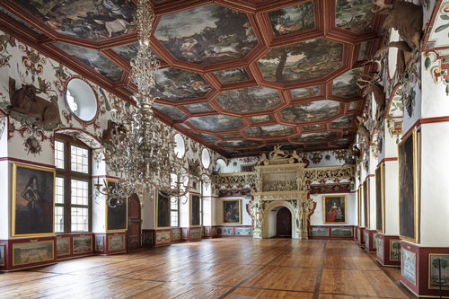  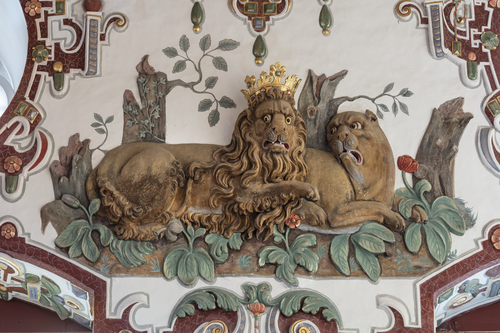
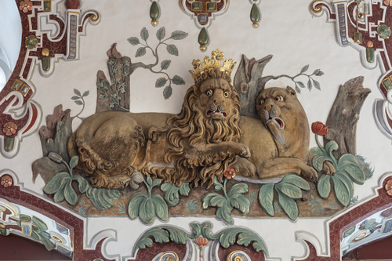  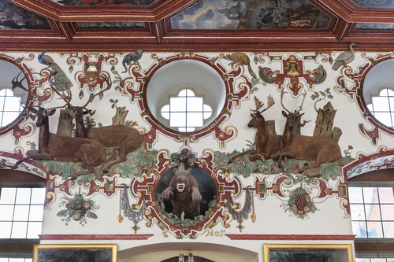
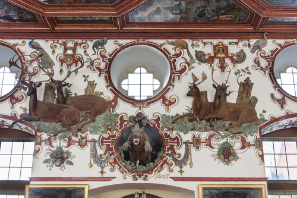  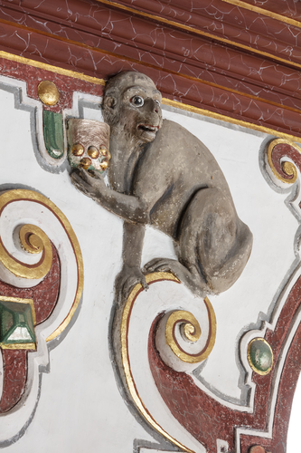
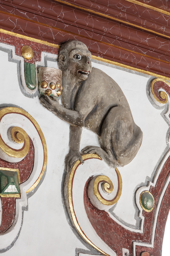  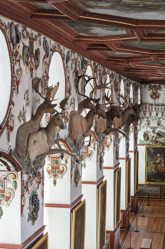
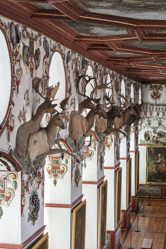  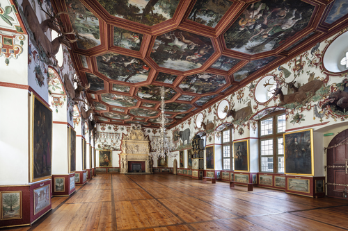
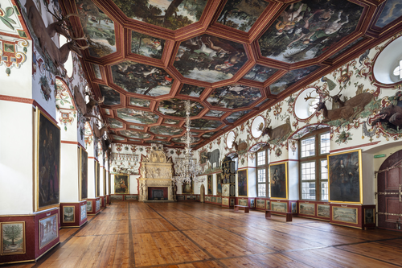  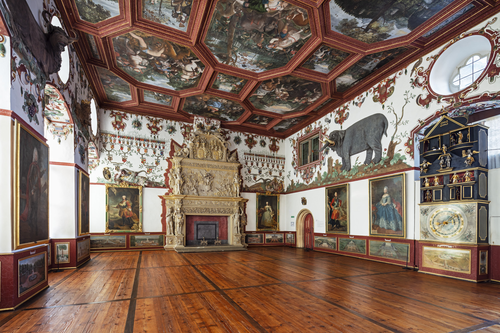
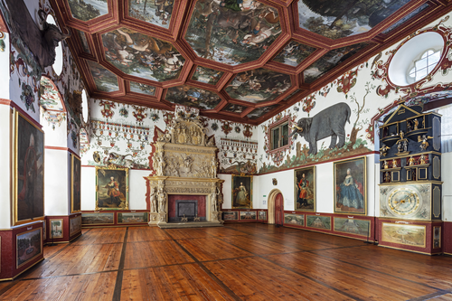 
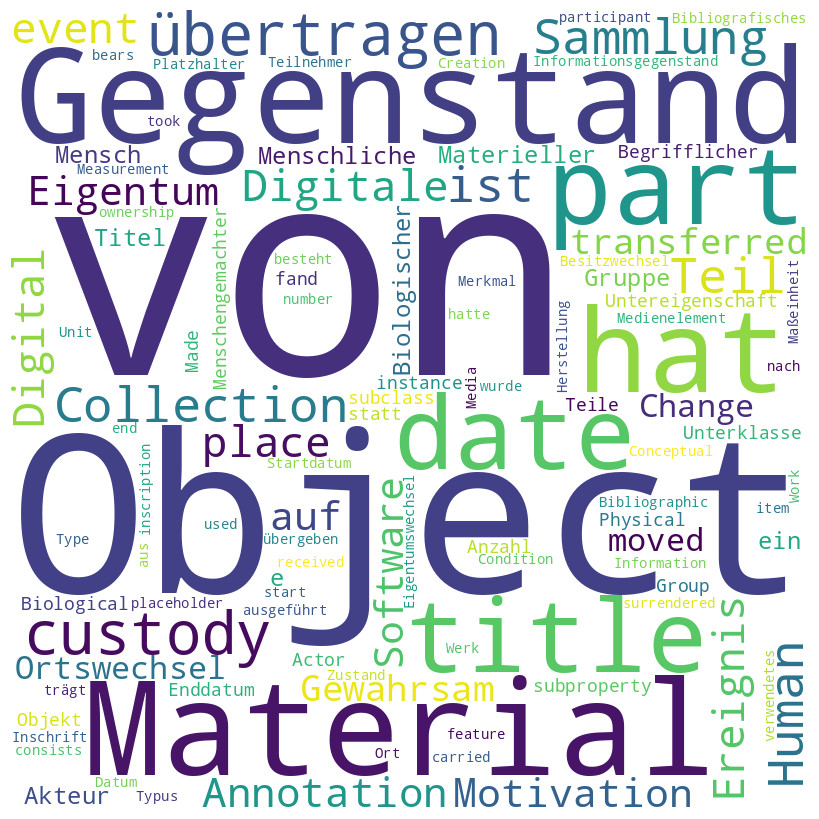